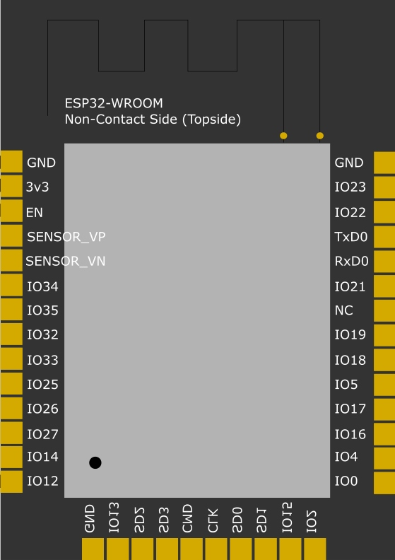

به اولین درس خوش آمدی. فرض ما این است که هیچ چیز نمیدانی: نه برق، نه برنامهنویسی، نه الکترونیک. در این درس اول با سه کلمهای که در تمام دوره تکرار میشوند (ولتاژ، جریان، مقاومت) دوست میشوی، بعد میفهمی میکروکنترلر چیست، ESP32 دقیقا چه چیزهایی در دل خودش دارد، چه فرقی با آردوینو و رزبری پای دارد، و روی برد واقعی هر قطعه کجاست و چه کار میکند.
🎯 بعد از این درس میتوانی
- ولتاژ، جریان و مقاومت را با عدد توضیح بدهی و قانون اهم را حساب کنی
- فرق میکروکنترلر با کامپیوتر را بگویی
- مشخصات اصلی ESP32 را بشناسی و معنی هر کدام را بفهمی
- بین ESP32، آردوینو Uno و رزبری پای برای یک پروژه انتخاب درست کنی
- روی برد DevKitC ماژول، آنتن، مبدل USB، رگولاتور و دکمهها را پیدا کنی
- مسیر «نوشتن ← کامپایل ← آپلود ← اجرا» را توضیح بدهی
🧰 پیشنیاز و وسایل
- هیچ پیشنیازی ندارد؛ از صفر شروع میکنیم
- اگر برد ESP32 داری کنار دستت بگذار و همزمان با درس نگاهش کن
- اگر نداری، نگران نباش: عکسهای واقعی و شبیهساز Wokwi کافی است
- یک کاغذ و خودکار برای حساب کردن مثالها
برق در ۵ دقیقه: ولتاژ، جریان، مقاومت
قبل از این که حتی اسم ESP32 را بیاوریم، باید سه کلمه را بفهمی. بدون این سه کلمه، هر هشدار ایمنی در این دوره (مثلا «۵ ولت را به پین نده» یا «بیشتر از ۲۰ میلیآمپر نکش») فقط یک جمله حفظی میماند. با این سه کلمه، خودت میفهمی چرا.
یک مخزن آب را روی پشت بام تصور کن که با یک لوله به شیر آشپزخانه وصل است.
ولتاژ (Voltage) مثل فشار آب است: هر چه مخزن بالاتر باشد، آب با فشار بیشتری به شیر میرسد. واحدش ولت (V) است.
جریان (Current) مثل مقدار آبی است که در هر ثانیه از لوله رد میشود. واحدش آمپر (A) است؛ در الکترونیک کوچک معمولا با میلیآمپر (mA) کار میکنیم، یعنی یک هزارم آمپر.
مقاومت (Resistance) مثل باریکی لوله است: لوله باریک جلوی عبور آب را میگیرد. واحدش اهم (Ω) است.
قانون اهم: رابطه این سه
این سه مفهوم با یک فرمول ساده به هم وصلاند که اسمش قانون اهم است: V = I × R. یعنی ولتاژ برابر است با جریان ضرب در مقاومت. اگر دو تا از سه عدد را بدانی، سومی را حساب میکنی: I = V ÷ R یا R = V ÷ I.
مثال ۱. یک مقاومت ۱۰۰۰ اهمی (۱ کیلو اهم، 1kΩ) را به ۳٫۳ ولت وصل میکنیم. جریان چقدر است؟ I = 3.3 ÷ 1000 = 0.0033A = 3.3mA.
مثال ۲. همان مقاومت را به ۵ ولت وصل کنیم: I = 5 ÷ 1000 = 5mA. ولتاژ بیشتر = فشار بیشتر = جریان بیشتر.
مثال ۳. اگر مقاومت تقریبا صفر باشد (مثلا یک سیم خالی بین ۳٫۳ ولت و زمین)، I = 3.3 ÷ 0 به سمت بینهایت میرود. در عمل رگولاتور یا باتری تا آخرین توانش جریان میدهد، سیم داغ میشود و قطعه میسوزد. به این میگویند اتصال کوتاه (Short circuit)، و دلیل اصلی سوختن بردها در دست مبتدیهاست.
توان: چرا قطعهها داغ میشوند
یک عدد چهارم هم هست: توان (Power) با واحد وات (W)، یعنی «چقدر انرژی در هر ثانیه مصرف یا به گرما تبدیل میشود». فرمولش P = V × I است. مثلا ESP32 وقتی Wi-Fi روشن است حدود ۱۵۰ میلیآمپر از ۳٫۳ ولت میکشد: P = 3.3 × 0.15 ≈ 0.5W، یعنی نیم وات. یک لامپ LED خانگی حدود ۹ وات است؛ پس ESP32 تقریبا هجده برابر کممصرفتر از یک لامپ است. همین کممصرفی است که آن را برای دستگاههای باتریدار مناسب میکند.
چون ESP32 یک قطعه حساس است که با ۳٫۳ ولت کار میکند و هر پینش فقط چند ده میلیآمپر جریان تحمل میکند. هر اشتباه در ولتاژ یا جریان یعنی برد سوخته. کسی که قانون اهم را میفهمد، قبل از وصل کردن سیم حساب میکند؛ کسی که نمیفهمد، بعد از سوختن برد تعجب میکند.
ولتاژ همیشه نسبت به یک نقطه اندازه گرفته میشود، همانطور که ارتفاع را نسبت به کف زمین میسنجیم. در مدار این نقطه مرجع را زمین یا GND مینامیم و ولتاژش را صفر فرض میکنیم. وقتی میگوییم «پین ۳٫۳ ولت است» یعنی «۳٫۳ ولت بالاتر از GND». برای همین در همه مدارهای این دوره، GND همه قطعهها باید به هم وصل باشد.
میکروکنترلر چیست و چه فرقی با کامپیوتر دارد؟
کامپیوتر یا گوشی تو یک پردازنده قوی دارد که به تنهایی کاری از دستش برنمیآید: حافظه RAM جدا، هارد یا SSD جدا، کارت شبکه جدا و یک سیستمعامل (ویندوز، اندروید) لازم دارد تا همه را مدیریت کند. نتیجه: قدرت بسیار زیاد، ولی مصرف برق بالا، قیمت بالا و چند ثانیه تا چند ده ثانیه زمان روشن شدن.
میکروکنترلر (Microcontroller یا MCU) یک کامپیوتر کامل ولی کوچک در یک تراشه است: پردازنده، حافظه، و «دست و پا» (پینهایی برای روشن کردن LED، خواندن دکمه و سنسور) همه در یک قطعه به اندازه ناخن. سیستمعامل سنگین ندارد؛ فقط یک برنامه دارد که به محض روشن شدن اجرا میشود و تا وقتی برق هست تکرار میشود.
کامپیوتر مثل مدیر یک اداره بزرگ است: هزار کار مختلف بلد است، منشی و بایگانی و تلفنخانه دارد، ولی صبحها نیم ساعت طول میکشد تا مستقر شود و حقوق زیادی میگیرد.
میکروکنترلر مثل نگهبان شب است: فقط یک دستورالعمل روی کاغذ دارد («هر ده دقیقه در را چک کن، اگر باز بود زنگ بزن»)، به محض رسیدن کارش را شروع میکند، هرگز خسته نمیشود و حقوق کمی میگیرد. برای کارهای تکراری و ساده، نگهبان از مدیر مناسبتر است.
میکروکنترلرها همه جا هستند و تو هر روز با دهها عدد از آنها سروکار داری: در ماشین لباسشویی، کنترل تلویزیون، ماوس، ترموستات کولر، چراغهای هوشمند و حتی مسواک برقی.
ESP32 دقیقا چیست؟
ESP32 یک میکروکنترلر است که شرکت چینی Espressif Systems (مستقر در شانگهای) در سال ۲۰۱۶ عرضه کرد. چیزی که آن را معروف کرد این بود که Wi-Fi و بلوتوث را داخل خود تراشه دارد و در عین حال بسیار ارزان است. قبل از آن، برای وصل کردن یک آردوینو به اینترنت باید ماژول جداگانه میخریدی و کلی سیمکشی و دردسر داشتی.
| مشخصه | مقدار در ESP32 (مدل اصلی) | به زبان ساده یعنی |
|---|---|---|
| پردازنده | دو هستهای Xtensa LX6، تا ۲۴۰ مگاهرتز | دو «مغز» که هر کدام تا ۲۴۰ میلیون قدم کوچک در ثانیه برمیدارند. یکی میتواند Wi-Fi را اداره کند و دیگری برنامه تو را. |
| حافظه موقت (SRAM) | ۵۲۰ کیلوبایت | «میز کار»: جای متغیرها وقتی برنامه در حال اجراست. با قطع برق پاک میشود. |
| حافظه فلش | معمولا ۴ مگابایت (روی ماژول، بیرون از خود تراشه) | «قفسه کتاب»: جای ذخیره برنامه تو. با قطع برق پاک نمیشود. |
| Wi-Fi | 802.11 b/g/n روی باند ۲٫۴ گیگاهرتز | به مودم خانه وصل میشود. باند ۵ گیگاهرتز را پشتیبانی نمیکند. |
| بلوتوث | Bluetooth Classic (BR/EDR) و BLE نسخه ۴٫۲ | هم با بلندگو و گوشی به روش قدیمی حرف میزند، هم با روش کممصرف BLE. |
| ولتاژ کاری | ۳٫۳ ولت | مهمترین عدد این دوره. پینها ۵ ولت را تحمل نمیکنند. |
| پینهای ورودی/خروجی | ۳۴ پین GPIO (همه روی برد در دسترس نیستند) | «دست و پا»هایی برای وصل کردن LED، دکمه، سنسور و موتور. |
| مبدل آنالوگ به دیجیتال | ADC دوازده بیتی، ۱۸ کانال | ولتاژ ۰ تا حدود ۳٫۳ ولت را به عددی بین ۰ تا ۴۰۹۵ تبدیل میکند. |
| مصرف | حدود ۸۰ تا ۲۴۰ میلیآمپر با Wi-Fi روشن؛ در خواب عمیق حدود ۱۰ میکروآمپر (خود تراشه) | در خواب عمیق با یک باتری کوچک ماهها زنده میماند (در درس ۶.۱ میبینی). |
Wi-Fi و بلوتوث کارهای زمانحساسی دارند: باید به موقع به بستههای رادیویی جواب بدهند. اگر برنامه تو در همان لحظه مشغول یک حلقه طولانی باشد، ارتباط قطع میشود. در Arduino-ESP32 به طور پیشفرض کارهای رادیو بیشتر روی هسته ۰ و تابع loop() تو روی هسته ۱ اجرا میشود؛ پس هر دو کار راحتتر کنار هم پیش میروند.
درون ESP32 چه خبر است؟ (نمودار بلوکی)
نمودار زیر نقشه سادهشده داخل تراشه است. لازم نیست همه اسمها را الان حفظ کنی؛ هر کدام در یکی از درسهای بعدی با جزئیات میآید. فقط ببین که همه اینها در یک تراشه جا شدهاند.
پردازنده رئیس است، ولی همه کارها را خودش نمیکند. مثلا وقتی میخواهی یک LED را نرم کمنور کنی، به بخش PWM میگوید «این پین را با این نسبت روشن و خاموش کن» و سراغ کار بعدی میرود؛ PWM خودش تا ابد این کار را ادامه میدهد. همین تقسیم کار است که ESP32 را با وجود کوچکی اینقدر توانا میکند.
ESP32 در محصولات واقعی
ESP32 فقط اسباببازی آموزشی نیست. میلیونها دستگاه تجاری بر پایه آن ساخته شدهاند:
- کلیدها و پریزهای هوشمند: مثلا سری Shelly Plus و بسیاری از کلیدهای Wi-Fi دار که با اپ گوشی کنترل میشوند.
- چراغها و نوارهای LED هوشمند: پروژه متنباز معروف WLED روی ESP32 اجرا میشود.
- سنسورهای خانه: دماسنج، رطوبتسنج، سنسور کیفیت هوا و نشت آب که داده را به گوشی میفرستند.
- کشاورزی و صنعت: پایش رطوبت خاک، کنترل پمپ آب از راه دور، شمارندههای صنعتی.
- دوربینهای ارزان: برد ESP32-CAM (درس ۵.۳) برای دوربین نظارتی ساده و زنگ در تصویری.
یعنی مهارتی که در این دوره یاد میگیری، همان مهارتی است که شرکتها برای ساخت محصول واقعی استفاده میکنند.
مقایسه کامل: ESP32، آردوینو Uno و رزبری پای
این سه اسم را زیاد میشنوی و مبتدیها معمولا نمیدانند کدام را بخرند. جدول زیر مقایسه دقیق است. آردوینو Uno با تراشه ATmega328P معروفترین برد آموزشی دنیاست و رزبری پای یک کامپیوتر کامل کوچک با لینوکس است.
| ویژگی | ESP32 DevKit | Arduino Uno R3 | Raspberry Pi 4 / 5 |
|---|---|---|---|
| نوع | میکروکنترلر | میکروکنترلر | کامپیوتر تکبردی (SBC) |
| قیمت (تقریبی، جهانی) | ارزانترین: چند دلار | اصلی گرانتر از ESP32؛ نسخههای کپی ارزان | چند ده دلار، بسته به RAM؛ بهعلاوه کارت حافظه و آداپتور |
| پردازنده | ۲ هسته Xtensa LX6، تا ۲۴۰ مگاهرتز | ۱ هسته ۸ بیتی AVR، ۱۶ مگاهرتز | ۴ هسته ARM Cortex-A72 (Pi 4، ۱٫۵ تا ۱٫۸ گیگاهرتز) یا Cortex-A76 (Pi 5، ۲٫۴ گیگاهرتز) |
| حافظه RAM | ۵۲۰ کیلوبایت | ۲ کیلوبایت | ۱ تا ۸ گیگابایت (Pi 5 تا ۱۶ گیگابایت) |
| حافظه برنامه | معمولا ۴ مگابایت فلش | ۳۲ کیلوبایت فلش | کارت microSD (چند ده گیگابایت) |
| سیستمعامل | ندارد (FreeRTOS سبک، زیر کد تو) | ندارد | لینوکس (Raspberry Pi OS) |
| Wi-Fi و بلوتوث | ✅ هر دو داخلی | ❌ ندارد | ✅ هر دو داخلی |
| ولتاژ منطقی پینها | ۳٫۳ ولت | ۵ ولت | ۳٫۳ ولت |
| ورودی آنالوگ (ADC) | ✅ ۱۸ کانال ۱۲ بیتی (۰ تا ۴۰۹۵) | ✅ ۶ کانال ۱۰ بیتی (۰ تا ۱۰۲۳) | ❌ ندارد (ماژول ADC جدا لازم است) |
| خروجی آنالوگ واقعی (DAC) | ✅ ۲ کانال | ❌ | ❌ |
| مصرف برق معمول | حدود ۰٫۲ تا ۰٫۸ وات؛ در خواب عمیق چند ده میکرووات | حدود ۰٫۲۵ وات (حدود ۵۰ میلیآمپر در ۵ ولت) | حدود ۳ تا ۸ وات (Pi 5 بیشتر)؛ خواب عمیق ندارد |
| زمان روشن شدن | کمتر از ۱ ثانیه | کمتر از ۱ ثانیه | ۱۵ تا ۴۰ ثانیه (بالا آمدن لینوکس) |
| زمانبندی دقیق (Realtime) | خوب (در حد میکروثانیه) | عالی و قابل پیشبینی | ضعیف؛ لینوکس ممکن است برنامه را چند میلیثانیه معطل کند |
| قطع ناگهانی برق | مشکلی نیست | مشکلی نیست | ممکن است کارت SD خراب شود |
| مناسب برای | اینترنت اشیا، سنسور بیسیم، کنترل از گوشی، دستگاه باتریدار | یادگیری الکترونیک پایه، کار با ماژولهای ۵ ولتی | پردازش تصویر، وبسرور سنگین، هوش مصنوعی، دسکتاپ کوچک |
چون برای اکثر پروژههای «خانه هوشمند» و «اینترنت اشیا» بهترین تعادل را دارد: از آردوینو Uno بیش از ده برابر سریعتر است و ۲۶۰ برابر RAM بیشتر دارد، Wi-Fi و بلوتوث را مجانی دارد، و برخلاف رزبری پای در یک ثانیه روشن میشود، با باتری ماهها کار میکند و با قطع برق خراب نمیشود. تنها نقطه ضعف مهمش برای مبتدی: ۳٫۳ ولتی بودن، که در همین درس یاد میگیری چطور مدیریتش کنی.
کدام را انتخاب کنم؟
این نمودار تصمیم را از بالا دنبال کن. به هر سؤال صادقانه جواب بده:
دماسنج اتاق که عدد را روی گوشی نشان بدهد: ESP32. نیاز به Wi-Fi دارد و ساده است.
دوربین تشخیص چهره با هوش مصنوعی و ذخیره ویدیو: رزبری پای. پردازش تصویر سنگین و حافظه زیاد لازم دارد.
ترکیب هر دو: در پروژههای بزرگ معمولا چند ESP32 سنسورها را میخوانند و داده را بیسیم به یک رزبری پای مرکزی میفرستند. این سه رقیب نیستند؛ همتیمیاند.
- این ویدیو یک معرفی طولانی است؛ برای این درس فقط بخشهای اول (معرفی ESP32، مشخصات و مقایسه با بردهای دیگر) را ببین.
- دقت کن مدرس مشخصات را چطور میشمارد و آنها را با جدول بالا مقایسه کن: هستهها، حافظه، Wi-Fi و بلوتوث.
- ببین روی برد چه قطعههایی را نشان میدهد (ماژول، مبدل USB، دکمهها) و با بخش «آناتومی برد» همین درس تطبیق بده.
- قسمتهای نصب نرمافزار و برنامهنویسی را فعلا رد کن؛ در فصل ۲ به آنها میرسیم.
آناتومی برد: هر قطعه کجاست و چه کار میکند
ESP32 خودش یک تراشه کوچک مربعی است که لحیم کردنش کار متخصص است. برای همین همیشه آن را به شکل برد توسعه (Development Board) میخریم: یک برد آماده که تراشه، حافظه، آنتن، مبدل USB و رگولاتور ولتاژ را کنار هم دارد و پایههایش مستقیم روی برد بورد مینشیند. رسمیترین برد، ESP32-DevKitC V4 ساخت خود Espressif است:

- (۱) LED روشن بودن ۵ ولت (5V Power On LED). یک LED قرمز کوچک که وقتی کابل USB وصل است روشن میشود. فقط نشان میدهد برق رسیده؛ با برنامه قابل کنترل نیست. اگر روشن نشد، اول کابل یا پورت USB را بررسی کن.
- (۲) ردیف پایهها (I/O Connector). دو ردیف ۱۹ تایی، در مجموع ۳۸ پایه (اگر برد تو DOIT DevKit V1 است، دو ردیف ۱۵ تایی یعنی ۳۰ پایه دارد؛ فرقش را در درس ۱.۲ میبینی). هر پایه یک اسم چاپی دارد (مثل
23،GND،3V3). همه اتصالهای دنیای بیرون از اینجاست. درس ۱.۳ کاملا درباره همین پایههاست. - (۳) ماژول ESP32-WROOM-32E. جعبه فلزی نقرهای. داخلش خود تراشه ESP32، حافظه فلش ۴ مگابایتی، کریستال ۴۰ مگاهرتز (ضربان قلب ساعت پردازنده) و قطعههای رادیویی است. پوشش فلزی جلوی نویز رادیویی را میگیرد. قسمت مشکی بیرونزده سمت راست (بدون پوشش فلزی) آنتن است: یک مسیر مسی زیگزاگ روی برد که امواج Wi-Fi و بلوتوث را میفرستد و میگیرد.
- (۴) مبدل USB به UART (USB-to-UART Bridge). تراشه مربعی کوچک؛ روی این برد مدل CP2102 ساخت Silicon Labs. ESP32 مدل اصلی خودش USB بلد نیست و فقط زبان سریال (UART) را میفهمد. این تراشه مترجم بین USB کامپیوتر و UART ماژول است. بردهای ارزانتر معمولا به جای آن CH340 دارند که درایور متفاوتی لازم دارد (درس ۲.۱).
- (۵) دکمه BOOT. به پین
GPIO0وصل است. اگر هنگام روشن شدن یا ریست نگهش داری، ESP32 به جای اجرای برنامه قبلی، منتظر دریافت برنامه جدید میماند (حالت دانلود). بیشتر وقتها Arduino IDE این کار را خودکار انجام میدهد؛ اگر آپلود گیر کرد، این دکمه نجاتدهنده توست. - (۶) پورت micro-USB. هم برق ۵ ولت را از کامپیوتر میگیرد، هم برنامه را منتقل میکند، هم پیامهای Serial را به کامپیوتر میفرستد. سه کار با یک کابل.
- (۷) دکمه EN (ریست). به پین
ENوصل است. زدنش یعنی «خاموش و روشن کن»: برنامه از اول (ازsetup()) شروع میشود. برنامه پاک نمیشود.
در عکس بالا، کنار تراشه CP2102 یک قطعه مشکی سهپایه با یک زبانه پهن فلزی میبینی. این رگولاتور ولتاژ (LDO) است. کارش این است که ۵ ولت USB را به ۳٫۳ ولت ثابت تبدیل کند، چون ESP32 با ۵ ولت میسوزد. مثل یک شیر فشارشکن در لولهکشی ساختمان: فشار زیاد ورودی را به فشار امن و ثابت تبدیل میکند. انرژی اضافه به گرما تبدیل میشود، برای همین این قطعه کمی گرم میشود و طبیعی است. هر چیزی که به پین 3V3 وصل کنی هم برقش را از همین رگولاتور میگیرد، پس ظرفیتش محدود است (معمولا چند صد میلیآمپر برای کل برد).
برد رسمی DevKitC فقط LED قرمز تغذیه دارد و LED قابل برنامهریزی ندارد. ولی بیشتر بردهای ارزان بازار (مثل DOIT DevKit V1) یک LED آبی روی GPIO2 هم دارند. اگر برد تو دو LED دارد، قرمز یعنی برق و آبی یعنی «در اختیار برنامه تو». در درس ۱.۲ انواع بردها را کامل میشناسی.
نگاه دقیقتر به ماژول WROOM
اگر پوشش فلزی ماژول را کنار بزنیم (که نباید!)، پایههای خود ماژول را میبینیم. تصویر زیر نقشه پدهای لحیم ماژول WROOM از بالاست. برد توسعه فقط این پدها را به پایههای بزرگتر و راحتتر وصل کرده است.

SD2، SD3، CMD، CLK، SD0، SD1) همان پینهای GPIO6 تا GPIO11 هستند که به حافظه فلش وصلاند و هرگز نباید استفاده شوند.تصویر: مخزن raphaelbs/esp32-cam-ai-thinker در GitHub، مجوز Apache-2.0آنتن امواج رادیویی را در هوا پخش میکند. اگر زیر یا روی آن فلز، سیم، باتری یا دست تو باشد، برد ممکن است Wi-Fi را ضعیف بگیرد. در طراحی جعبه و مدار همیشه قسمت آنتن را از لبه بیرون بگذار و زیرش سیم عبور نده.
خطر بزرگ: ۳٫۳ ولت در برابر ۵ ولت
این مهمترین هشدار سختافزاری کل دوره است، پس با دقت بخوان. آردوینو Uno با ۵ ولت کار میکند و بیشتر آموزشهای قدیمی اینترنت و ماژولهای بازار برای ۵ ولت طراحی شدهاند. ولی پینهای ESP32 فقط تا ۳٫۳ ولت را تحمل میکنند. حداکثر مطلق در دیتاشیت حدود ۳٫۶ ولت است.
فرض کن لولهکشی حمامت برای فشار شهر طراحی شده و یک نفر پمپ صنعتی به آن وصل کند. لولهها لحظه اول شاید دوام بیاورند، ولی آببندیها کمکم میترکند. پین ESP32 هم دقیقا همین است: ۵ ولت ممکن است فورا نسوزاندش، ولی داخل تراشه دیودهای محافظ کوچکی هستند که جریان اضافه را تحمل میکنند تا جایی که گرم و خراب شوند. نتیجه اغلب «مرگ تدریجی» است: پین اول کمی عجیب رفتار میکند و بعد برای همیشه از کار میافتد.
یک سنسور ۵ ولتی خروجیاش را مستقیم به پین ESP32 وصل کردهای. دیود محافظ داخلی پین، هر چیزی بالاتر از حدود ۳٫۳ + ۰٫۶ = ۳٫۹ ولت را به خط ۳٫۳ ولت هدایت میکند. اختلاف 5 − 3.9 = 1.1V باید روی تنها مقاومت مسیر بیفتد، یعنی مقاومت خیلی کم خروجی سنسور و سیمها؛ طبق قانون اهم با مقاومت خیلی کم، جریان خیلی زیاد میشود. دیودی که برای چند میلیآمپر ساخته شده، دهها میلیآمپر را تحمل نمیکند.
راه حل ساده: یک مقسم ولتاژ با دو مقاومت (مثلا ۱۰ کیلو و ۲۰ کیلو اهم) که ۵ ولت را به حدود 5 × 20 ÷ 30 ≈ 3.3V کم میکند، یا یک ماژول مبدل سطح منطقی (Logic Level Shifter). ساختن مقسم و اندازه گرفتنش با مولتیمتر، و طرز استفاده از مبدل سطح را در درس ۱.۴ تمرین میکنی و در درسهای فصل ۳ هر جا لازم باشد دوباره یادآوری میکنیم.
| کار | امن است؟ | توضیح |
|---|---|---|
| وصل کردن برد با کابل USB به کامپیوتر | ✅ | ۵ ولت USB از رگولاتور رد میشود و ۳٫۳ ولت میشود. |
تغذیه سنسور ۳٫۳ ولتی از پین 3V3 | ✅ | روش استاندارد برای بیشتر سنسورها. |
تغذیه سروو موتور از پین 5V | ✅ با احتیاط | پین 5V همان ۵ ولت USB است (معمولا از پشت یک دیود محافظ). فقط تغذیه سروو از آن باشد، نه سیم سیگنال. |
| وصل کردن خروجی یک ماژول ۵ ولتی به GPIO | ❌ | باید مقسم ولتاژ یا مبدل سطح منطقی بگذاری. |
وصل کردن پین 5V یا VIN به یک GPIO | ❌❌ | بدترین اشتباه ممکن. |
وصل کردن مستقیم 3V3 به GND | ❌❌ | اتصال کوتاه؛ رگولاتور داغ میشود و ممکن است بسوزد. |
برنامه (Firmware) چیست و چطور به برد میرسد؟
ESP32 بدون برنامه فقط یک تکه سیلیکون است. برنامه یا فرمور (Firmware) فهرست دستورهایی است که میگوید پردازنده چه کار کند. به آن «فرمور» میگویند چون جایی بین سختافزار (Hard) و نرمافزار (Soft) قرار دارد: روی حافظه فلش خود دستگاه ذخیره میشود و با خاموش شدن پاک نمیشود.
ولی ESP32 فارسی و انگلیسی نمیفهمد؛ فقط زبان ماشین (صفر و یک) را میفهمد. ما برنامه را به زبان C++ (با کتابخانههای سادهکننده Arduino) مینویسیم و یک برنامه دیگر به اسم کامپایلر آن را به زبان ماشین ترجمه میکند. مسیر کامل این است:
- نوشتن. کد را در یک ویرایشگر (مثل Arduino IDE) روی کامپیوتر مینویسی. در این مرحله برد حتی لازم نیست وصل باشد.
- کامپایل (Compile). با زدن دکمه تیک (✓)، کامپایلر کد تو را بررسی میکند. اگر اشتباه نوشتاری باشد (مثلا یک
;جا افتاده)، همینجا با پیام قرمز خطا میدهد. اگر درست باشد، یک فایل باینری میسازد. - آپلود (Upload). با زدن دکمه فلش (→)، ابزاری به اسم
esptoolفایل باینری را از راه USB و مبدل USB به سریال (CP2102 یا CH340) به برد میفرستد. در این لحظه برد به طور خودکار (با کمک خطهای کنترلی مبدل USB) به حالت دانلود میرود؛ همان کاری که دکمه BOOT دستی انجام میدهد. - ذخیره در فلش. برنامه در حافظه فلش نوشته میشود و برنامه قبلی پاک میشود. از این به بعد، حتی اگر برد را از کامپیوتر جدا کنی و به یک شارژر گوشی بزنی، همین برنامه اجرا میشود.
- اجرا. برد خودکار ریست میشود و برنامه جدید از
setup()شروع میشود.
یک برنامه واقعی چه شکلی است؟
هنوز قرار نیست چیزی آپلود کنی (نصب ابزار در درس ۲.۱ است). ولی بد نیست همین حالا شکل یک برنامه را ببینی. این برنامه کوچک از ESP32 میخواهد خودش را معرفی کند و مشخصاتی را که در جدول بالا خواندی، از زبان خود تراشه چاپ کند:
// برنامه معرفی: ESP32 خودش را معرفی میکند
void setup() {
Serial.begin(115200); // باز کردن کانال پیام به کامپیوتر
delay(1000); // یک ثانیه صبر تا Serial Monitor آماده شود
Serial.println("Hello! I am an ESP32.");
Serial.print("Chip model: ");
Serial.println(ESP.getChipModel());
Serial.print("CPU cores: ");
Serial.println(ESP.getChipCores());
Serial.print("CPU speed (MHz): ");
Serial.println(ESP.getCpuFreqMHz());
Serial.print("Flash size (bytes): ");
Serial.println(ESP.getFlashChipSize());
}
void loop() {
Serial.println("I am alive..."); // هر ۲ ثانیه یک پیام
delay(2000);
}
- توضیح (Comment). هر چیزی بعد از
//فقط برای خواندن انسان است و کامپایلر آن را نادیده میگیرد. برنامهای که توضیح ندارد، بعد از یک ماه حتی برای نویسندهاش هم معما میشود. - تابع setup(). هر چیزی بین آکولادهای
{و}این تابع، فقط یک بار بعد از روشن شدن یا ریست اجرا میشود. کارهای آمادهسازی (مثل باز کردن کانال پیام) فقط یک بار لازم است. هر برنامه Arduino حتما باید setup و loop داشته باشد، حتی اگر خالی باشند. - شروع ارتباط سریال و کمی صبر.
Serial.begin(115200)کانال پیامرسانی از طریق USB را با سرعت ۱۱۵۲۰۰ بیت در ثانیه باز میکند.delay(1000)یعنی ۱۰۰۰ میلیثانیه صبر. ESP32 صفحه نمایش ندارد؛ Serial تنها راه ما برای دیدن داخل برنامه است. صبر یک ثانیهای کمک میکند پیامهای اول قبل از باز شدن پنجره Serial Monitor گم نشوند. - چاپ متن و مدل تراشه.
printlnمتن را میفرستد و به خط بعد میرود؛printبه خط بعد نمیرود.ESP.getChipModel()از خود تراشه اسم مدلش را میپرسد. ترکیب print و println یک خط خوانا میسازد: برچسب، بعد مقدار. عادت خوبی است که از همین اول یاد بگیری. - تعداد هسته، سرعت و اندازه فلش. سه تابع دیگر از شیء
ESPکه به ترتیب تعداد هستهها (معمولا ۲)، سرعت پردازنده به مگاهرتز (معمولا ۲۴۰) و اندازه فلش به بایت (معمولا ۴۱۹۴۳۰۴ یعنی ۴ مگابایت) را برمیگردانند. با این برنامه میتوانی مشخصات برد خودت را واقعا اندازه بگیری، به جای این که به نوشته فروشنده اعتماد کنی. در درس ۱.۲ همین ایده را برای تشخیص نوع برد کاملتر میکنیم. - تابع loop(). بعد از setup، این تابع بینهایت بار تکرار میشود: هر دو ثانیه یک پیام «زندهام» چاپ میکند. میکروکنترلر سیستمعامل ندارد که برنامه به آن «برگردد»؛ برنامه هرگز تمام نمیشود. دیدن این پیام تکراری ثابت میکند برد هنگ نکرده است.
خروجی در Serial Monitor چیزی شبیه این است (مدل دقیق تراشه روی برد تو ممکن است کمی فرق کند):
قبل از خط اول ممکن است چند خط پیام بوت (مثل rst:0x1 (POWERON_RESET)) یا چند نویسه درهم ببینی؛ طبیعی است و مال خود تراشه در لحظه روشن شدن است. اگر فقط I am alive... را دیدی و خطهای معرفی نبودند، یعنی setup قبل از باز شدن Serial Monitor تمام شده؛ دکمه EN را یک بار بزن تا برنامه از اول اجرا شود. (اینها را در درس ۲.۲ روی برد واقعی تجربه میکنی.)
بدون خریدن برد هم میتوانی این برنامه را اجرا کنی. Wokwi یک شبیهساز رایگان در مرورگر است؛ مثل یک برد ESP32 مجازی که روی صفحه کامپیوترت زندگی میکند. فقط سه قدم:
- دکمه «باز کردن Wokwi» را بزن تا یک پروژه ESP32 خالی در زبانه جدید باز شود.
- در Wokwi زبانه
diagram.jsonرا باز کن، همه محتوایش را پاک کن و متنی را که با دکمه «کپی diagram.json» برمیداری جایش بچسبان. - با دکمه «کپی کد sketch.ino» کد را بردار، در زبانه
sketch.inoجای کد قبلی بچسبان و دکمه سبز ▶ را بزن. خروجی در Serial Monitor پایین صفحه ظاهر میشود.
در شبیهساز، مدل تراشه و اندازه فلش ممکن است با برد واقعی فرق داشته باشد. آموزش کامل Wokwi در درس ۲.۳ است.
غیر از Arduino (که در این دوره استفاده میکنیم)، میتوانی ESP32 را با ESP-IDF (ابزار رسمی و حرفهای Espressif به زبان C) یا MicroPython (زبان پایتون) هم برنامهریزی کنی. Arduino برای شروع سادهترین است و بیشترین آموزش و کتابخانه را دارد. در واقع هسته Arduino-ESP32 خودش روی ESP-IDF ساخته شده؛ پس چیزی که یاد میگیری هدر نمیرود. منبع رسمی: مستندات Arduino-ESP32 و دیتاشیت ESP32.
اشتباههای رایج و راه حل
| علامت یا باور غلط | واقعیت یا علت | کار درست |
|---|---|---|
| «ESP32 به Wi-Fi خانه وصل نمیشود، ولی گوشی وصل است» | مودم فقط باند ۵ گیگاهرتز پخش میکند یا اسم شبکه ۲٫۴ و ۵ یکی است و مشکل ایجاد میکند | باند ۲٫۴ گیگاهرتز مودم را فعال کن. ESP32 مدل اصلی ۵ گیگاهرتز را پشتیبانی نمیکند. |
| با وصل کردن USB، LED قرمز روشن نمیشود | کابل خراب، پورت خراب، یا اتصال کوتاه روی برد | همه سیمهای روی برد بورد را جدا کن و فقط USB بزن. کابل دیگری امتحان کن. |
| رگولاتور کنار USB خیلی داغ است (نمیشود دست را رویش نگه داشت) | جریان زیادی از پین 3V3 کشیده میشود، یا 3V3 به GND اتصال کوتاه شده | فورا USB را جدا کن. مدار را برای اتصال کوتاه بررسی کن. موتور و نوار LED را هرگز از 3V3 تغذیه نکن. |
| «ماژول ۵ ولتی آردوینو را مستقیم وصل کردم و کار کرد، پس مشکلی نیست» | ممکن است پین به تدریج آسیب ببیند | برای هر خروجی ۵ ولتی مقسم ولتاژ یا مبدل سطح بگذار. «کار کردن» یعنی «هنوز نسوخته». |
| «ESP32 مثل رزبری پای است، پس میتوانم پایتون و لینوکس نصب کنم» | ESP32 لینوکس ندارد | برای پایتون، MicroPython هست؛ ولی کتابخانههای لینوکسی اجرا نمیشوند. |
میدانم وسوسه میشوی این بخش تئوری را سریع رد کنی و بروی سراغ روشن کردن LED. نکن. من شاگردهایی داشتهام که در هفته اول سه برد سوزاندند فقط چون فرق ۳٫۳ و ۵ ولت را جدی نگرفتند. قبل از رفتن به درس بعد، باید بتوانی بدون نگاه کردن جواب بدهی: ولتاژ چیست؟ جریان چیست؟ اگر ۳٫۳ ولت روی ۲۲۰ اهم بیفتد جریان چقدر است؟ (جواب: حدود ۱۵ میلیآمپر.) اگر نمیتوانی، این درس را یک بار دیگر بخوان. عجله در الکترونیک بوی سوختگی میدهد.
آزمون این درس
در مدل لوله آب، «ولتاژ» معادل کدام است؟
- مقدار آبی که در هر ثانیه از لوله رد میشود
- فشار آب (ارتفاع مخزن)
- باریکی لوله
- رنگ آب
یک مقاومت ۳۳۰ اهمی به ۳٫۳ ولت وصل است. جریان چقدر است؟
- ۱۰۸۹ میلیآمپر
- ۱ میلیآمپر
- ۱۰ میلیآمپر
- ۱۰۰ میلیآمپر
I = 3.3 ÷ 330 = 0.01A = 10mA. قانون اهم: جریان برابر ولتاژ تقسیم بر مقاومت.کدام گزینه درباره ESP32 مدل اصلی درست نیست؟
- دو هسته پردازشی دارد
- بلوتوث کلاسیک و BLE هر دو را دارد
- پینهایش با ۳٫۳ ولت کار میکنند
- به Wi-Fi پنج گیگاهرتز وصل میشود
وظیفه تراشه CP2102 روی برد DevKitC چیست؟
- ترجمه بین USB کامپیوتر و UART (سریال) ماژول ESP32
- تبدیل ۵ ولت به ۳٫۳ ولت
- ذخیره برنامه
- ارسال امواج Wi-Fi
میخواهی سنسور دمای باغچه بسازی که با باتری کار کند و هر ساعت دما را از طریق Wi-Fi بفرستد. بهترین انتخاب کدام است؟
- Raspberry Pi 5
- ESP32
- Arduino Uno
- یک لپتاپ قدیمی
بعد از آپلود موفق، برد را از کامپیوتر جدا و به شارژر گوشی وصل میکنی. چه اتفاقی میافتد؟
- برنامه پاک شده و برد کاری نمیکند
- برد میسوزد چون شارژر ولتاژ متفاوتی دارد
- همان برنامه آخر از setup شروع به اجرا میکند
- برنامه منتظر کامپیوتر میماند
تمرینها
برای هر مورد جریان را حساب کن و بگو برای یک پین ESP32 (توصیه: حداکثر ۲۰ میلیآمپر) امن است یا نه: الف) ۳٫۳ ولت روی ۱۰ کیلو اهم. ب) ۳٫۳ ولت روی ۱۰۰ اهم. ج) ۱٫۳ ولت (بعد از افت ولتاژ LED) روی ۲۲۰ اهم.
راهنمایی
I = V ÷ R. کیلو یعنی ضرب در ۱۰۰۰. جواب را به میلیآمپر بنویس (ضرب در ۱۰۰۰).
چه باید ببینی؟
| مورد | جریان | برای پین ESP32 |
|---|---|---|
| الف) ۳٫۳ ولت روی ۱۰ کیلو اهم | 0.33mA | کاملا امن |
| ب) ۳٫۳ ولت روی ۱۰۰ اهم | 33mA | امن نیست (بیشتر از ۲۰ میلیآمپر) |
| ج) ۱٫۳ ولت روی ۲۲۰ اهم | حدود 5.9mA | امن |
- جواب الف باید دقیقا ۱۰۰ برابر کوچکتر از جواب ب باشد، چون مقاومتش ۱۰۰ برابر بزرگتر است. اگر این نسبت را نمیبینی، یک جا ضرب در ۱۰۰۰ را جا انداختهای.
- اگر برای الف عددی مثل
0.00033یا330گرفتی، مشکل از تبدیل واحد است: اول کیلو اهم را به اهم ببر، آخر آمپر را به میلیآمپر. - جواب ج باید بین ۵ و ۶ میلیآمپر باشد؛ همان حدود ۶ میلیآمپری که در درس ۲.۲ برای LED با مقاومت ۲۲۰ اهم میبینی.
جواب کامل با توضیح
برای هر سه مورد همان سه قدم: مقاومت را به اهم ببر، I = V ÷ R را حساب کن (جواب به آمپر است)، بعد ضرب در ۱۰۰۰ کن تا میلیآمپر شود.
- الف)
10kΩ = 10 × 1000 = 10000Ω. پسI = 3.3 ÷ 10000 = 0.00033Aو ضرب در ۱۰۰۰ میشود0.33mA. کاملا امن؛ این همان مقدار معمول مقاومت Pull-up است. - ب)
I = 3.3 ÷ 100 = 0.033A = 33mA. بیش از حد توصیه (۲۰ میلیآمپر) و نزدیک حد مطلق پین (حدود ۴۰ میلیآمپر). ۱۰۰ اهم برای مستقیم گذاشتن بین پین و GND خیلی کم است. - ج)
I = 1.3 ÷ 220 ≈ 0.0059A ≈ 5.9mA. امن و مناسب LED: نور کافی میدهد و فاصله زیادی تا حد پین دارد.
معیار درستی: برای هر مورد هم عدد درست باشد و هم تصمیم (امن یا نه). نکته اصلی تمرین: هر چه مقاومت کوچکتر، جریان بیشتر؛ مقاومتی که بین پین و قطعه میگذاری همان چیزی است که پین را سالم نگه میدارد.
اگر برد داری، زیر نور خوب (یا با دوربین گوشی و زوم) اینها را پیدا کن و اسمشان را بنویس: ۱) مدل ماژول (چاپ روی پوشش فلزی)، ۲) مدل تراشه مبدل USB (CP2102 یا CH340؟)، ۳) رگولاتور، ۴) دکمههای EN و BOOT، ۵) تعداد پایهها، ۶) نوع سوکت USB (micro-USB یا USB-C).
راهنمایی
روی تراشه مبدل USB معمولا با حروف خیلی ریز نوشته شده CP2102 یا CH340C. رگولاتور همان قطعه سهپایه با زبانه پهن است؛ روی بیشتر بردهای ارزان عبارت AMS1117 را رویش میبینی. این نتایج را نگه دار؛ در درس ۱.۲ لازمت میشود.
چه باید ببینی؟
جدول تو باید شبیه یکی از این دو ستون باشد (برد تو ممکن است کمی فرق داشته باشد):
| مورد | DevKitC V4 رسمی | برد ارزان رایج (DOIT DevKit V1) |
|---|---|---|
| ۱) ماژول | ESP32-WROOM-32E (در نسخههای قدیمیتر ESP32-WROOM-32 یا -32D) | ESP32-WROOM-32 یا ESP-WROOM-32 |
| ۲) مبدل USB | CP2102 | CP2102 یا CH340C |
| ۳) رگولاتور | قطعه سیاه سهپایه با زبانه پهن، کنار CP2102 | معمولا AMS1117 (اغلب با 3.3 در ادامهاش) |
| ۴) دکمهها | دو طرف سوکت USB: EN و BOOT | همینطور؛ گاهی به جای EN نوشته RST |
| ۵) پایهها | ۳۸ (دو ردیف ۱۹تایی) | ۳۰ (دو ردیف ۱۵تایی) |
| ۶) سوکت USB | micro-USB | micro-USB (نسخههای جدیدتر: USB-C) |
- تعداد پایهها باید زوج باشد و دو ردیف برابر؛ اگر عدد فرد شمردی، یک ردیف را دوباره بشمار.
- نوشته ماژول با
ESP32-(یاESP-) شروع میشود. اگرESP8266یاESP-12دیدی، برد تو اصلا ESP32 نیست (درس ۱.۲). - اگر روی تراشه کنار USB نوشته
CH9102، آن هم یک مبدل WCH است و درایور جدا میخواهد (درس ۲.۱). اگر برد ESP32-S3 یا C3 است و هیچ مبدلی نمیبینی، طبیعی است: USB داخل خود تراشه است.
جواب کامل با توضیح
- ماژول: برد را زیر نور کج کن تا انعکاس روی فلز کم شود؛ خط اول زیر لوگو اسم ماژول است (مثلا
ESP32-WROOM-32E). از همین اسم نوع تراشه و مقدار فلش را میفهمی. - مبدل USB: نزدیکترین تراشه کوچک به سوکت USB. CP2102 مربع کوچکی بدون پایه بیرونزده است؛ CH340C مستطیلی با پایههایی در دو طرف. همین اسم تعیین میکند در درس ۲.۱ کدام درایور را نصب کنی.
- رگولاتور: قطعه سهپایه با یک زبانه فلزی پهن، معمولا نزدیک سوکت USB. کارش تبدیل ۵ ولت USB به ۳٫۳ ولت است.
- دکمهها: دو دکمه کوچک کنار سوکت USB.
EN(یاRST) یعنی راهاندازی دوباره؛BOOT(گاهیIO0) یعنی ورود به حالت دریافت برنامه. - پایهها: یک ردیف را بشمار و دو برابر کن. ۳۰ یعنی به احتمال زیاد DOIT DevKit V1، ۳۸ یعنی DevKitC یا شبیه آن.
- سوکت USB: micro-USB شکل ذوزنقه دارد و فقط از یک طرف وارد میشود؛ USB-C بیضی و دوطرفه است. کابل دیتای مناسب همین سوکت را کنار بگذار.
معیار درستی: هر شش مورد نوشته شده باشد. مهمترینشان دو مورد است: اسم مبدل USB (برای درایور در درس ۲.۱) و تعداد پایهها (برای شناختن مدل برد در درس ۱.۲).
برای هر پروژه بین ESP32، آردوینو Uno و رزبری پای یکی را انتخاب کن و در یک جمله دلیل بیاور: الف) کنترل کولر آبی از گوشی از بیرون خانه. ب) پخش فیلم روی تلویزیون. ج) زنگ مدرسه که ساعت ۸ صبح به صدا درمیآید. د) ربات مسیریاب کلاس که معلم با کتاب آردوینو درس میدهد.
چه باید ببینی؟
| پروژه | انتخاب | کلمه کلیدی که باید در دلیل تو باشد |
|---|---|---|
| الف) کولر از بیرون خانه | ESP32 | Wi-Fi / اینترنت |
| ب) پخش فیلم | رزبری پای | HDMI / سیستمعامل لینوکس / پخش ویدیو |
| ج) زنگ ساعت ۸ | ESP32 | ساعت دقیق از اینترنت (NTP) |
| د) ربات کلاس با کتاب آردوینو | آردوینو Uno | هماهنگی با منبع آموزشی کلاس |
- برای هر مورد، جدول مقایسه یا نمودار تصمیم را از بالا دنبال کن؛ باید به همین انتخاب برسی.
- اگر برای (د) ESP32 را انتخاب کردی و دلیلت درست است (مثلا «قویتر و ارزانتر است»)، جوابت قابل قبول است؛ ولی دلیل اصلی انتخاب Uno هماهنگی با کتاب کلاس است.
جواب کامل با توضیح
الف) ESP32: نیاز به Wi-Fi و اینترنت. ب) رزبری پای: خروجی HDMI و پخش ویدیو. ج) ESP32: با Wi-Fi ساعت دقیق را از اینترنت (NTP) میگیرد؛ Uno ساعت دقیق ندارد مگر با ماژول اضافه. د) آردوینو Uno: هماهنگی با منبع آموزشی کلاس؛ هرچند ESP32 هم از پسش برمیآید.
روش فکر کردن برای هر پروژه: اول بپرس «لینوکس، HDMI یا پردازش سنگین لازم است؟» (اگر بله، رزبری پای)؛ بعد «Wi-Fi یا بلوتوث لازم است؟» (اگر بله، ESP32)؛ و آخر «فقط ماژولهای ۵ ولتی یا کتاب آردوینو Uno؟» (اگر بله، Uno). این همان نمودار تصمیم درس است.
ولتاژ فشار است، جریان مقدار عبور و مقاومت مانع؛ همه با V = I × R به هم وصلاند. ESP32 یک میکروکنترلر دو هستهای ۲۴۰ مگاهرتزی با ۵۲۰ کیلوبایت RAM، Wi-Fi ۲٫۴ گیگاهرتز و بلوتوث است که با ۳٫۳ ولت کار میکند و هرگز نباید ۵ ولت به پینهایش برسد. برنامه نوشته، کامپایل، از راه USB و مبدل CP2102 یا CH340 آپلود و در فلش ذخیره میشود و با هر روشن شدن از setup اجرا میشود.